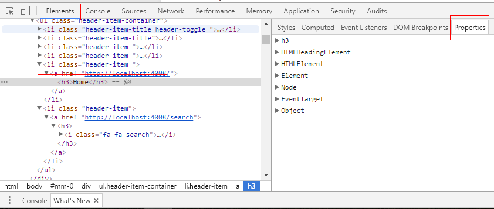

DOM 是以树型的数据结构，用来操作XML & HTML 文档的API。API 是 language-independent ，除了 javascript，其他语言也能实现。
如何查看 DOM 对象的类型
浏览器
F12
控制台 》 Elements 》 Properties

Core DOM & HTML DOM
DOM 是以树型的数据结构，用来操作XML & HTML 文档的API。HTML 是 XML 的子集，有些对象，例如，HTMLDocument 在 XML 的 DOM（即 Core DOM）是没有的，Core DOM 只有 Document。
访问 DOM Node
样例 html document
1
2
3
4
5
6
7
8
9
10
11
12
<!DOCTYPE html><html><head><title>My page</title></head><body><pclass="opener">first paragraph</p><p><em>second</em> paragraph</p><pid="closer">final</p><!-- and that's about it --></body></html>
document
document gives you access to the current document.
document.write() allows you to insert HTML into the page while the
page is being loaded.
If you try it after page load, it will replace the content of the whole page.
1
2
3
4
5
<p>It is now
<script>document.write("<em>"+newDate()+"</em>");</script></p>
结果：
1
2
3
<p>It is now
<em>Fri Apr 26 2013 16:55:16 GMT-0700 (PDT)</em></p>
document.cookie
document.cookie is a property that contains a string. This string is the content of the
cookies exchanged between the server and the client. When the server sends a page
to the browser, it may include the Set-Cookie HTTP header. When the client sends
a request to the server, it sends the cookie information back with the Cookie header.
>document.documentElement.hasChildNodes();true// The HTML element has three children, the head and the body elements and the// whitespace between them (whitespace is counted in most, but not all browsers). >document.documentElement.childNodes.length;3>document.documentElement.childNodes[0];<head>...</head>
>document.documentElement.childNodes[1];#text>document.documentElement.childNodes[2];<body>...</body>
>document.documentElement.childNodes[1].parentNode;<html>...</html>
childNodes 数目计算的例子
1
2
3
4
5
6
<body><pclass="opener">first paragraph</p><p><em>second</em> paragraph</p><pid="closer">final</p><!-- and that's about it --></body>
1
2
3
4
5
6
// assign a reference to body>varbd=document.documentElement.childNodes[2];>bd.childNodes.length;9// 9 = 3 个 <p> + 1 个注释 + 5 个标签之间的空白字符 text node
// firstChild is the same as childNodes[0] and lastChild is the same as childNodes[childNodes.length - 1]:>document.body.firstChild;#text>document.body.lastChild;#text>document.body.lastChild.previousSibling;<!--andthat's about it -->
> document.body.lastChild.previousSibling.nodeValue;
" and that'saboutit"
>varmy=document.getElementById('closer');>my.innerHTML='final!!!';"final!!!">my.innerHTML='<em>my</em> final';"<em>my</em> final">my.firstChild;<em>my</em>
>my.firstChild.firstChild;"my"// Another way to change text is to get the actual text node and change its nodeValue>my.firstChild.firstChild.nodeValue='your';"your"
// creates another text node and adds it as the first child of the bodydocument.body.insertBefore(document.createTextNode('first boo!'),document.body.firstChild);
cloneNode()
The method cloneNode() does this and accepts a boolean parameter (true = deep copy with all
the children, false = shallow copy, only this node).